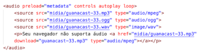

Paragrafos e Quebras de Linhas e Simbolos
a tag "<br>"serve para quebrar um texto em algum lugar especifico
esse texto e so um exemplo visual de
como o texto fica apos voce usar a tag br
nunca use a tag br varias vezes em sequencia isso a gente configura com o css, se tu usar vai foncionar mas nunca use isso em codigos quando for fazer algum site realmente
para conseguir colocar um simbolo nos textos voce so precisa usar o simbolo "&" e a abreviacao do nome do simbolo em ingles ex "lt" less than e "gt" greater than tambem tem o "reg" q nos da o simbolo de copright "®"que tambem pode ser escrito como "copy" outro exemplo e o trade "™" tem como colocar os simbolos das moedas como euro centavos yen e etc esses sao mais simples e so colocar o nome da moeda e pronto
ex:€ £ $ ¢
o simbolo Delta e diferente se a primeira letra for maiuscula ou minuscula
ex:δΔ
alguns simbolos que eu posso precisar mais tarde
w3schools
emojis tambem podem ser usados
ex:&#x e o codigo do emoji que voce quer usar por exemplo 😐
e so ir no site da emojipedia para pegar os codigos dos emojis e so nao usar o u+
testando carga com imagens
tutorial basico: usa png qnd for para usar a uma imagem sem fundo e o jpeg e qnd voce precisa usar pouco espaco(e preferivel que voce use o jpeg por causa do tamanho)
se a imagem estiver muito pesada e so usar o gimp/fotoshop
e possivel carregar imagens que estao dentro de pastas tudo que voce vai precisa fazer e colocar ao invez do nome da imagem colocar o caminho ate a ela por exemplo "imagens/foto.png"importante:a foto tem que estar na mesma pasta que o arquivo html ou em uma pasta dentro da pasta que esta o arquivo html caso contrario nao vai funcionar.na verdade vai sim por exemplo se a foto estiver uma pasta antes da pasta que o arquivo html esta e so adicionar no comeco um "../" e ele vai voltar uma pasta.
tambem e possivel carregar imagens externas, voce so tem que colocar ao invez do nome da imagem o link dela mas se o servidor q a imagem esta cair a imagem vai sumir do seu site entao e nao e muito recomendavel usar
Ex:
a imagem as vezes vai ficar gigante principalmente se for uma imagem da web mas isso da pra mudar com o css
te certifica que as imagens nao tem direitos autorais senao pode dar merda
tambem e possivel carregar um icon ao invez da foto
ex:
se quiser pode entrar no pexels para achar imagens e videos sem direitos autorais
favicon
favicon=favorite icon e o icone que fica ao lado da url do site por exemplo a url do chess.com tem um peao do lado isso e um favicon para criar um voce precisa do icone que voce pode ou criar ou pode pegar um no site favicon.cc lembrando que todos os icones tem que estar no formato .ico, no site do favicon tu pode transformar um png em icone, o comando para criar um icon e o comando "link" que eu vou falar mais sobre ele depois esse comando e feito na area "head" la em cima antes do titulo
para criar o comando tu so precisa escrever "link" e selecionar a opcao "link:favicon" e apertar enter ir na area "href" apagar oque ta escrito entre parenteses e apertar cntrl+espaco e selecionar o teu icone(e a mesma coisa que tu faz com as imagens)
ex: <link rel="shortcut icon" href="favicon.ico" type="image/x-icon">
Hierarquia de Titulos
esse conteudo e meio confuso de explicar mas basicamente a tag h1 cria um titulo principal um exemplo e o titulo ai em cima, a tag h2 cria um sub titulotitulo principal
sub-titulo
sub-titulo so que menor
tu ja entendeu
exemplo
exemplo
Boa sorte pq nem eu entendi esse caralho. Quanto mais importante o titulo maior ele e (foi oq eu entendi)semantica na html
o html 5 e considerada uma linguagem semantica eu nao sei oque isso significa entao nao vou falar nada sobre, ve no dicionario o significado
OBS:se o teu comando ficar vermelho e mesmo assim continuar foncionando e pq o comando foi descontinuado e vai parar de foncionar em algum tempo para saber quais sao esses comandos e quais comandos usar para substituir eles e so ir no site da w3c
formatacao de texto
quando for colocar um texto em negrito ou italico ou se voce quiser so envelopar uma tag com outra um exemplo e a tag "code", seleciona o texto que tu quer "envelopar" e aperta ctrl+shift+p ou se nao aparecer nada aperta com o botao direito e vai na opcao paleta de comandos la tu pesquisa por abb e seleciona a opcao envolver com abreviacao (essa paleta de comandos e muito util para outras coisas mas eu nao sei usar ainda)
negrito/destaque
nessa frase temos um termo em negrito com a tag "strong"(semantica)
italico/enfase
nessa frase temos um texto em italico com a tag "i"(nao semantica)
nessa frase temos um texto class="titulo" usando a tag "em"(semantica)
podemos criar um texto marcado com a tag "mark"
se quiser mudar a cor da marcacao e so colocar o parametro "style"
ex:<mark style>
usando isso voce pode selcionar a opcao background color e mudar a cor da marcacao
obs:quando voce usar a tag "mark" denovo a cor nao vai ser herdada mas se quiser que todos tenham a mesma cor voce pode usar o css na area head do codigo usando a tag "style" colocando a tag mark e entre colchetes o "background-color"
texto grande e pequeno
nesse texto tem um texto grande e um texto pequeno
para colocar um texto pequeno e so usar a tag small mas para letras grandes o comando ficou obsoleto entao isso so pode ser mexido com css
texto deletado
podemos marcar um texto como excluido para que ele possa ser lido mas nao considerado tag "del"
texto inserido
esse serve para mostra que o texto foi inserido posteriomente com a tag "ins"(na minha opniao isso e so um texto sublinhado)
texto sobrescrito
para inserir coisas do tipo x20+3 tag "sup"
texto subscrito
para colocar textos do tipo h2o tag "sub"
outras formatacoes
codigo-fonte
quando for escrever um codigo coloca ele na tag "code" para ficar mais facil de ler
EX:
document.getElementById('teste')
esse codigo esta escrito em java scriptEX2:
num = int(input ('digite um numero'))
if num % 2 == 0
print(f'o numero {num}e par')
else:
print(f'o numero{num}e impar)
print('fim do programa')
codigo feito em python, para deixar o codigo aparecendo assim e so envelopar a tap code com a tag pre
se quiser tirar o espaco que fica e so selecionar o codigo e apertar shift+tab para retirar o espaco ou apertar somente tab para adicionar espaco
citacoes
como dizia um cara que eu nao conheco o computador e um burro muito rapido
e so colocar a tag "q"
citacoes completas
e so usar a tag "blockquote" e colocar a citacao a um livro ou site se quiser colocar a tag <blockquote cite> e colocar o link do site que voce esta referenciando
abreviacao
to estudando HTML CSS online
texto invertido
comi o cu de quem ta lendo otario
e so usar a tag "bdo" e na aba "dir" colocar "rtl" ou "ltr" e inutil mas e legal k
trabalhando com listas
listas ordenadas
para criar uma lista ordenada a gente abre a tag "ol" e dentro dela a gente escreve
<li> item 1 </li>
e assim por diante ate finalizar a lista ex
- 1- valor padrao. cria uma lista numerada
- A- cria uma lista em ordem alfabetica em maiusculas
- a-tambem em ordem alfabetica mas em minuscula
- I- cria uma lista com numeros romanos em maiusculas
- i- tambem em numeros romanos mas em minusculas
voce tambem pode indicar o inicio da contagem usando o parametro start
por exemplo <ol type="I" start = "5"> vai gerar numeros a partir do numero 5
o comando ol tem um parametro type onde configuramos o marcador da lista atual ex:
<ol>
<li> item 1 </li>
<li> item 2 </li>
<ol type="a">
<li> item 2.1 </li>
<li> item 2.2 </li>
<li> item 2.3 </li>
</ol>
<li> item 3 </li>
<li> item 4 </li>
<li> item 5 </li>
resultado
1. item 1
2. item 2
a. item 2.1
b. item 2.2
c. item 2.3
3. item 3
4. item 4
5. item 5
listas nao ordenadas
uma lista sem numero kk
nessa lista tem o parametro "type" que tu pode usar para mudar o marcador para um quadrado, disco ou circulo
- item 1
- item 2
- item 3
listas e de definicao
basicamente tu usa os comandos "dt" e "dd" para criar a lista o comando "dt" cria um texto normal e o "dd" cria um texto que e um pouquinho para o lado(sim eu sei que da pra fazer isso sem esses comandos mas isso tem a ver com semantica tipo nesse caso tu ta falando para o html oque que tu ta fazendo)
usando links externos e internos
usando a tag "a" voce pode criar um texto que se clicado vai te redirecionar para outro site
EX: a href="exemplo de texto" target="_blank"
o target e para selecionar em qual aba ele vai abrir o link o normal e o link abrir na pagina que voce esta mas o recomendado e colocar _blank para o link abrir em uma pagina vazia, tem o atributo rel que serve para indicar qual a natureza do destino. Esse atributo aceita os seguintes valores
nextindica que o link e para a proxima parte do documento atualprevindica que o link e para a parte anterior do documento atualauthorindica que e um link para o site do autor do artigo atualexternalindica que e um link para outro site que nao faz parte do site que voce esta- nofollow indica que e um link para um site nao endossado, como um link pago,
o atributo target tem os seguintes valores
_blankvai abrir o link em uma guia nova_selfvai abrir o link na janela atual(padrao)_topvai desfazer todos os frames e abrir o destino no navagador completo_parentsimilar ao _top em uma referencia a janela mae(eu nao faco a minima ideia de oque isso significa)nome-do-framecaso esteja usando frames ,indicar o nome da janela a abrir
e possivel abrir um arquivo tambem e so ao invez do link colocar o caminho do arquivo atual ate o arquivo que voce deseja abrir, voce pode usar os comandos ./ para se referir ao arquivo superior na Hierarquia, use ../ para voltar um nivel para a pasta mais externa.
aprender linux
ex: <a href="../../../caminho ate o arquivo" target="_self" rel="next">exemplo de texto</a>
cada ../ e um arquivo que ele volta pra nao ficar com varios desse e so tentar colocar todos os arquivos na mesma pasta
links para downloads
basicamente tu vai adicionar o atributo "download" com o valor configurado com o nome arquivo a ser baixado e o atributo "type" para indicar ao navegador que tipo de arquivo esta sendo baixado
application/ziptext/htmltext/csstext/javascriptvideo/mp4video/h264video/jpegaudio/aacaudio/mpegfont/ttfimage/jpegimage/png
mais tipos de midia types
medias com html 5
imagens dinamicas
para fazer uma imagem que se adapta ao aparelho que esta sendo usado agente precisa de 3 ou mais versoes da foto em tamanhos diferentes
ex:
- uma foto para um computador ou tv agente cria uma foto de 1000x1000
- uma foto para um tablet e uma ft de 700x700
- e uma foto para abrir em um celular vai ser uma foto de 300x300
para criar isso a gente cria a tag picture e dentro dela a gente poe a tag source e seleciona a tag "source:midia:types" a gente muda de "min-width" para "max-width" e coloca o valor em 1050(pc,tv),750(tablet) e cria uma tag "img" e coloca a imagem grande nela depois disso e so colocar as outras imagens sempre colocar as maiores imagen em baixo
ex:
<picture>
<source media="(max-width: 750px)" srcset="../imagens/img-p.png" type="image/png" title="imagem dinamica">
<source media="(max-width: 1050px)" srcset="../imagens/img-m.png" type="image/png" title="imagem dinamica">
</picture>
esse comando vai te dar o seguinte resultado
audio
eu nao acho que alguem realmente vai usar isso mas e melhor anotar mesmo assim ,os audios sao bem pesados entao eu nao recomendo usar no maximo tu vai usar o comando para deixar um audio de fundo,tambem e possivel usar a tag "source" para tocar audios acho que tu sabe como usa o comando "source" entao nao vou explicar muito
ex:

dentro da tag "audio" tem varios "source" que serve basicamente para caso um arquivo nao seja reproduzido ele tenta reproduzir os outros arquivos que sao de formatos diferentes se nenhum der certo ele vai entregar um arquivo para download e a mensagem de que seu dispositivo nao consegue reproduzir audio
a tag audio tem alguns atributos sendo eles
preload, indica se o audio sera pre-carregado ou nao e aceita 3 valoresmetadata, vai carergar apenas as informacoes sobre o arquivo (tamanho,tempo,informacoes de direitos, etc)none, nao vai carregar absolutamente nada ate que o usuario clique no botao play ou um script que inicie a reproducaoauto(padrao) vai carregar o arquivo de audio inteiro assim que a pagina for carregada, mesmo que o usuario nunca aperte o playcontrols, vai aparecer um player na tela. caso nao seja colocado na tagaudio, o controle sera transparente e o usuario nao podera ver nem interagir com eleautoplay, quando inserido vai iniciar a reproducao automaticamente assim que o site for carregadoloop, vai tocar o audio em loop infinitamente
(a funcao autoplay nao pega direito entao nao recomendo usar)
reproduzindo videos
e bem parecido com o audio so muda que a tag e "video" e a outra diferenca e que tem a opcao "width" que eu recomendo colocar em 600px, os formatos que tem mais compatibilidade com os computadores hoje me dia sao
- mpeg
- webm
- ogg
exemplo de video
recomendavel sempre colocar um mp4 pois e o unico que funciona no edge e apple safari
tambem recomendo baixar o handbrake para poder mudar o formato das imagens
hospedar videos pode ser bem caro
alto consumo de banda ,site lento e incompatibilidade com alguns navegadores por conta dos codecs sao problemas que normalmente a gente so percebe quando lancamos um site.
e nossos sites raramente vai ter poucos videos e isso pode ser bem problematico
se voce quiser resolver isso voce pode usar o youtube e o vimeo para hospedar os seus videos, o youtube voce ja conhece entao nao vou falar muito sobre, o vimeo serve para quando voce quer limitar o acesso de todo mundo ao seu video por exemplo voce criou um curso online em video e nao quer que todo mundo tenha acesso a isso entao voce pode hospedar ele no vimeo ,as desvantagem desse programa e que ele pago anualmente e seus algoritimos nao sao tao otimizados quanto o do youtube logo os videos apresentam pequenos travamentos as vezes
no youtube basta voce apertar em compartilhar e depois incorporar que o site vai te entregar o comando completo. no vimeo eu nao faco a minima ideia e to com preguica de ir ver